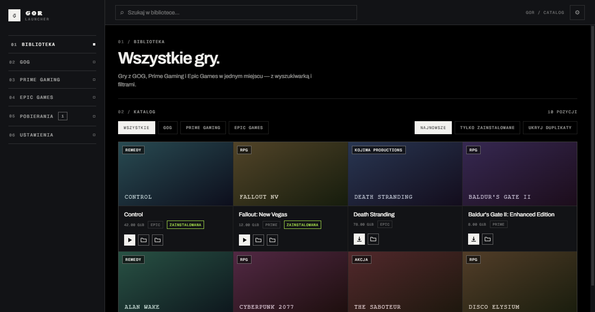
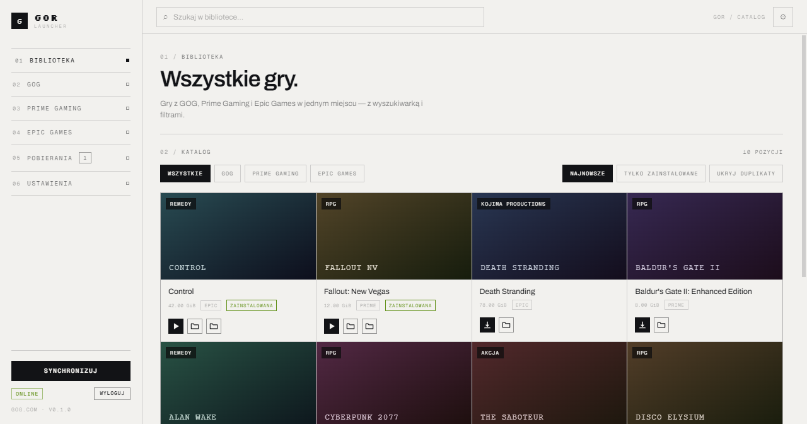
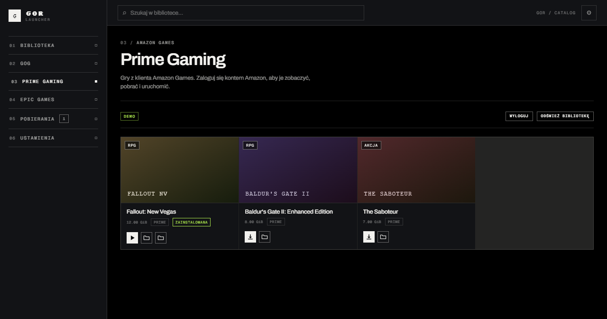
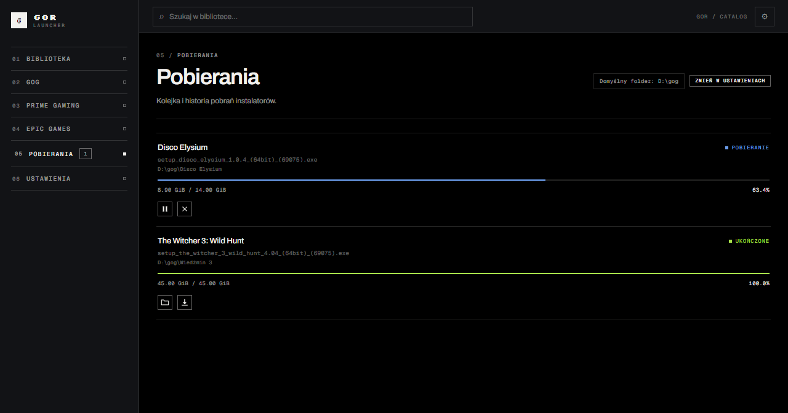
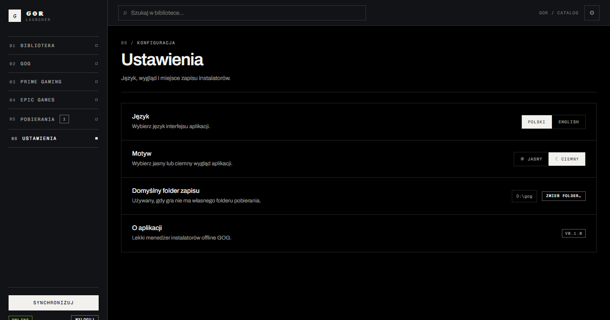

Biblioteka wszystkich sklepów
GOG, Prime Gaming i Epic Games w jednej siatce. Wyszukiwarka, filtr sklepu, sortowanie oraz ukrywanie duplikatów — ta sama gra zostaje raz, z pierwszeństwem dla zainstalowanej.
WINDOWS 10/11 · TAURI 2 + RUST · OPEN SOURCE
GOR Launcher trzyma biblioteki GOG, Prime Gaming i Epic Games w jednym oknie: instalatory offline, kolejka pobrań, cicha instalacja i przycisk Uruchom — bez klienta Galaxy i bez sklepowych aplikacji.

01 — FUNKCJE
Wszystko, co potrzebne do przeglądania, pobierania i uruchamiania gier — w jednym miejscu, bez terminala.
GOG, Prime Gaming i Epic Games w jednej siatce. Wyszukiwarka, filtr sklepu, sortowanie oraz ukrywanie duplikatów — ta sama gra zostaje raz, z pierwszeństwem dla zainstalowanej.
Przeglądarka biblioteki GOG z listą instalatorów: platforma, waga, wersja i język. Pobieranie z pauzą, wznowieniem i anulowaniem.
Pobrany instalator instaluje się cicho w wybranym folderze, a gotowa gra dostaje na kafelku przycisk Uruchom — jak w Prime i Epic.
Logowanie kontem Amazon, biblioteka z klienta Amazon Games (z okładkami), pobieranie do wybranego folderu i uruchamianie przez nile.
Konto Epic, biblioteka Epic Games Store i pobieranie przez legendary. Brakujące narzędzie instalujesz jednym przyciskiem z aplikacji.
Postęp, procent i rozmiar „pobrane / całość” dla GOG, Prime i Epic. Pasek postępu widać też na kafelku gry, więc nie musisz wchodzić w Pobierania.
Ciemny i jasny motyw oraz polski i angielski interfejs. Zmiana działa natychmiast i zapisuje się w ustawieniach.
Każda gra może mieć własny katalog. Aplikacja sprawdza, czy pliki nadal są na dysku, i oznacza grę jako Pobrane, W trakcie lub Brak pliku.
%APPDATA%\goglite
02 — WIDOKI
Zrzuty z interfejsu (przykładowa biblioteka, dane demonstracyjne). Kliknij obraz, aby otworzyć w pełnej rozdzielczości.




03 — JAK ZACZĄĆ
Pobierz …-setup.exe (NSIS) albo .msi z najnowszego wydania i uruchom instalator. Windows 10/11 x64, WebView2 jest już w systemie.
GOG loguje się w osobnym oknie (OAuth). Prime Gaming i Epic wymagają konta Amazon/Epic — narzędzia nile i legendary aplikacja instaluje jednym przyciskiem.
Wybierz grę, ustaw folder i pobierz instalator. Po instalacji kafelek dostaje przycisk Uruchom — bez opuszczania launchera.
nile — instalacja z aplikacjilegendary — instalacja z aplikacji%APPDATA%\goglitegoglite.db, auth.json, settings.jsonv*04 — WYDANIA
Instalator NSIS jest zalecany — sam tworzy skróty i wpis w „Aplikacje”. Pakiet MSI wybierz, jeśli wolisz instalację przez GPO/Intune.
Nazwy plików w wydaniu mogą zawierać podkreślenia i numer wersji. Wersja w aplikacji: 0.1.0.
05 — FAQ
Nie. GOR Launcher korzysta z API GOG oraz narzędzi nile (Amazon) i legendary (Epic), które instaluje samodzielnie. Klienty sklepów nie są potrzebne.
Do folderu domyślnego z Ustawień albo do folderu wybranego dla konkretnej gry (zakładka Instalatory → Zmień folder). Każdy wiersz w Pobieraniach pokazuje pełną ścieżkę.
Nie. Dane trzymamy w %APPDATA%\goglite, a identyfikator aplikacji się nie zmienił — biblioteka, ustawienia i historia pobrań zostają.
Interfejs, fonty i ikony są lokalne, więc aplikacja uruchomi się offline, pokaże zapisaną bibliotekę i zainstalowane gry. Pobieranie i logowanie wymagają połączenia.